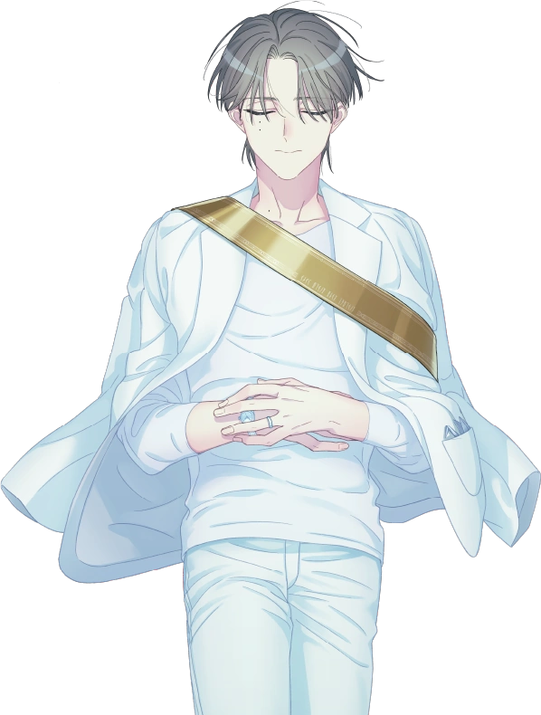
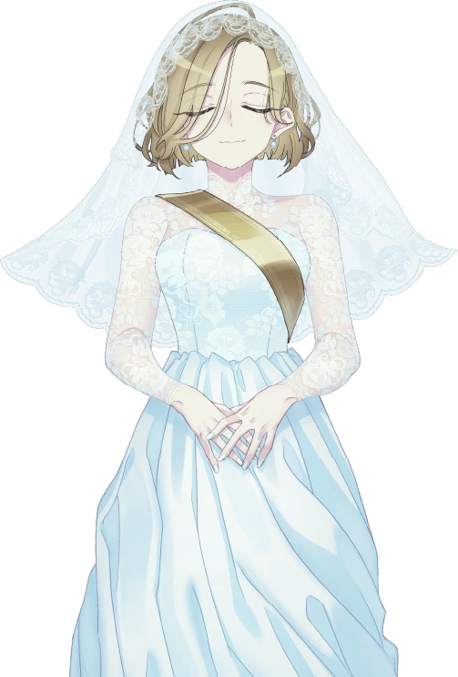
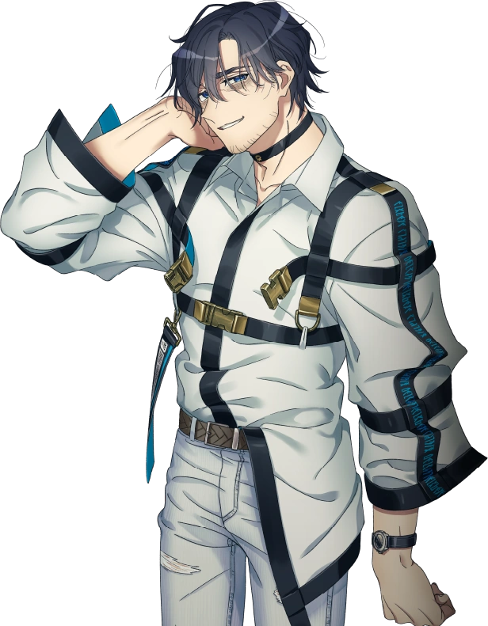
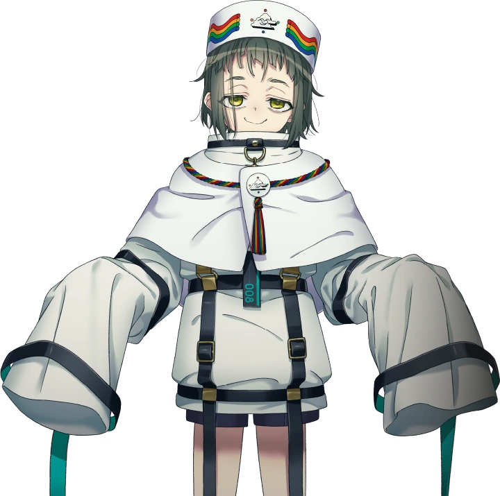
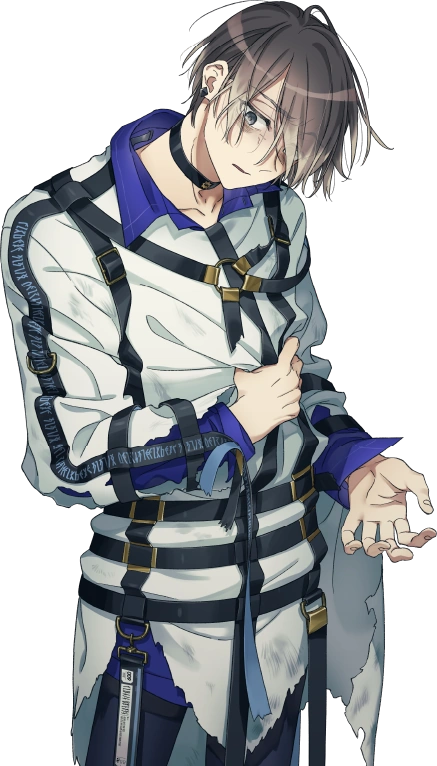
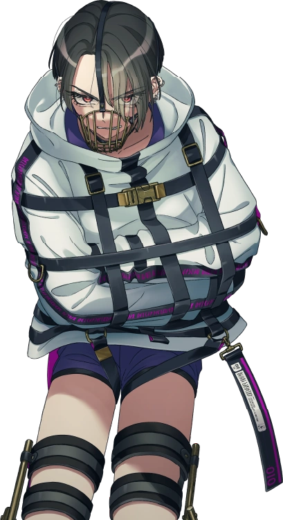

004 — Pain takes place basically between It's Not My Fault and After Pain.
This is mostly a timeline question, but I feel fairly confident in this based on the staging of the MVs and comparing it to both the hourglass and the end of Pain character summary.
In It's Not My Fault, Muu spends the vast majority at the top of the hourglass as she sets it that way at the beginning of the MV. (Rei only flips it back at the very end.) In Pain, we actively see the moment that the hourglass runs out. And in After Pain, we only really see Mu at the bottom of the hourglass, after she's fallen from grace.
As for the actual story of Mu, we also see that follow this roughly three MV arc.
In It's Not My Fault, Mu spends most of the time as queen bee and is just generally slaying throughout. She's in control, and she's loving life.
Then, Rei shows up, and everyone in Mu's entourage (and she) immediately notice her general disinterest/disapproval of Mu, and they immediately turn on her.
(I also really love how this scene paints Rei as the transfer student coming into this wild scenario. She's just squinting like, what the fuck is going on at this school? Why are they all worshipping Mu? And they're like, whoops, you weren't supposed to ask that question, get pranked.)
Right at the end of the It's Not My Fault MV, we see Rei flip the hourglass, accompanied by this image of her, on the ground, gripping the leg of a chair in the classroom. We can now assume that this is the moment in which Rei flips out and hits Mu with the chair, as we see in Pain. We now know this is the pivotal point at which the social dynamics shift to favor Rei over Mu. This leads into Mu being bullied within the mid-ending (before she talks about Haruka) part of Pain and when she kils Rei. This is the same timeline as in After Pain, with the staging of the kill scene in Pain being a direct reference.
So, that's our timeline! I honestly think it's really funny that they were like, "well, we told the end of Mu's story in a song called After Pain, so maybe we should make that song chronologically after the song Pain." But, y'know, it works.
The Pain MV shows Mu comparing two sets of "villains" and "heroes"-- Es and Haruka, and herself and Rei.
The lyrics of the song are written such that they, in large part, can refer to Mu and Rei's situation in addition to Es and Haruka's. Although, generally speaking, I'd say that the lyrics lean more towards Mu telling Es how she feels, whereas the MV depicts what was happening with Mu and Rei. Still, there's undeniably crossover based on how the lyrics are distributed across the MV.
No really, if only you judged me INNOCENT
He wouldn’t have had to die, poor baby
I mean after all, it’s not my fault
This lyric is most clearly directed at Es about Haruka; Haruka directly stated that he'd only kill himself if we voted Mu guilty, and we did. Therefore, Haruka's death was preventable if Es had found Mu innocent.
However, it also applies closely to Rei about herself. If Rei had judged Mu innocent (giving her "proper" respect and worship upon arrival), she wouldn't have had to die, because the bullying wouldn't have started in the first place. Mu could have continued being the beloved spoiled princess, and Rei wouldn't have lost her life.
I'm... not sure if that's the right interpretation, though? After all, Mu is pretty harsh towards herself in the way she's portrayed in the Pain MV.
She depicts herself as childishly taunting a lot of the time, and the consistent "it's not my fault"s feel more like they're used to chastise her previous self who actually believed that.
The line:
"So lame, that the "villain" is the one still alive",
similarly, would be used to say "it's lame that Es is alive and Haruka isn't, when his death is their fault." But, when you apply it to Mu and Rei, especially with the staging, the undeniable interpretation is "it's lame that I, Mu, the villain, am still the one who's alive [when it's my fault."
Though Mu taunts Es for being a murderer, she, too, is a murderer. That's even something they connect over in the audio drama.
Mu: I’m so sorry for killing a person! Rei too…! I’m sorry! hic… *cries* Warden-san… you too… you…
Es: …
Mu: When Haruka died… Mahiru too… and Shidou too… you were also having it rough…
Es: …
Mu: Hey.. It’s okay to cry…
Es: …ah…
They both cry.
Mu clearly understands Es' guilt over the Haruka situation by the end of the audio drama, and she clearly sees it as similar to the guilt she feels over the Rei situation. So, interestingly, I think the more accurate to Mu interpretation of the earlier lyric--
No really, if only you judged me INNOCENT
He wouldn’t have had to die, poor baby
--is "if only [I] had judged [Rei] innocent, [she] wouldn't have had to die, poor baby."
While Rei did kinda die as a result of not worshipping Mu, I guess, the bigger issue was the bullying. While the file asserted that Mu wasn't the one who prompted the bullying directly, she "understood that anyone who rebels against her must fall, and that she was undoubtedly the center of the universe."
That means that Mu is finally acknowledging her role in starting this. While she insisted heavily in her second audio drama that she didn't play a hand in the bullying, she's now acknowledged to herself that, by not stopping her followers and believing she was in the right, she condoned the violence and let it continue.
Mu has finally realized she doesn't understand or think of how others feel.
This is explicitly stated in the audio drama in regards to Haruka:
Mu: I’m sorry for not understanding Haruka’s feelings..! Mu is an idiot.. so even now Mu still doesn’t get it…
It's also basically directly stated in the lyrics.
"That baby, what he was feeling as he died, you have no idea, do you"
While this is partially targeted at Es, as all lyrics are, I believe it applies to herself as well.
But is also seemingly a trend with her. She's never been good at understanding others, because historically in her life, she hasn't had to. That's something she's finally started to self reflect on
"You can't read the room, you're such a waste of air"
While this lyric could be read as Es-coded, I think it's more accurately Mu blaming herself for never thinking about what others are thinking. In the Pain MV, this happens right before she starts sobbing from Rei hitting her with the chair-- the display of "unsightliness" that tore down her throne. She's blaming herself for not understanding that her status hinged around her perception of being beautiful, not reading the room.
Before, she didn't see any reason to think of anyone else-- she was, after all, the center of the universe. But now that Haruka is gone and Mu still doesn't completely understand why he killed himself, she's left at a loss that only understanding Haruka would have been able to fill. She doesn't have a chance to get to know him better now, because he's already gone.
It's only by realizing that she doesn't understand others that Mu was able to grow and gain awareness of herself.
I was shocked to see how (in my opinion) accurately Mu portrayed herself in Pain. She showed herself as the villain at the beginning, then showed herself breaking down in a moment of weakness, followed by her stubbornly trying to hold onto her pride despite her world becoming hell once the bullying turned towards her. It shows her snapping and killing as a way to try to regain control. It's all accurate to how I've read the story, and unlike After Pain (where she's pitying herself as the victim) or It's Not My Fault (where she presents her meanness as a virtue), it shows her in both her understandable parts and her flaws.
I don't think Mu would have ever been able to have this much nuanced understanding of herself if she hadn't started to understand how other people feel in response to her. This is something that I believe is directly brought on by mourning Haruka, and she has NO idea how to handle it.
Mu wants to blame Es because it's the only way she can repent.
I'm not sure I phrased it exactly right there, but basically, Mu knows there's not anything she can do to save Haruka or Rei anymore. They're dead and gone; their fates have been sealed.
Not doing anything to honor their memory or atone just leaves Mu feeling guilty though, and while she's got a better pulse on the situation now, Mu has never been good at just taking negative emotion as it comes. It's all still foreign to her. Typically when this happens, she lashes out to try to turn the tables of the pain. She's not quite at that level of self servingness anymore, so she turns to Es.
The best way she can find to appropriately atone while also punishing herself and acknowledging blame is to compare herself to Es-- to acknowledge her own faults while bringing Es to the same painful conclusion she's come to realize-- that whether she intended it or not, she murdered someone who, at the beginning of the story, was innocent.
She's vengeful on Haruka's behalf, upset as his death, but she's a murderer, too. Mu is judging both of them as murderers and as villains. She wants Es to go down the same path of acknowledging that they have blood on their hands that she has. And, like, honestly? Pop off, queen.
Mu having so much of her social status/"worth" being tied to her beauty makes the Cinderella cover make a TON of sense.
I was initially thinking this cover would go to Mu just because it's a popular song that someone would cover, and I thought it fit her best stylistically and lyrics wise out of the options, but uh, yeah, checks.
So irritating!! Hello to the unfortunate me
I’m confused, I hate it, I hate it
me when the hourglass fits
No no no, It’s not okay
I’ll go back to a cocoon and try again
Bonus points for cocoon!
What exactly is Mu wearing at the end?
It's giving religious-- I heard some people say Mother Mary vibes? That could make sense with Haruka's weird mom complex stuff.
Which, by the way, it's so unfortunate for Mu that she really just wanted a genuine friend and Haruka came with a lot of his own issues, too. Would be nice for her to have a solid, dependable friend who just likes her for her and doesn't die instantly. My bad Haruka lol
SHIDOU KIRISAKI

005 — Shidou, unfortunately, died after finding his will to live.
During the first trial interrogations, Shidou has wished ES to give him a death sentence. I believe this is because he has given up on life as his family already died (as mentioned in the report).
But after the second trial, he treated Mahiru and Fuuta's injuries which was caused by Kotoko delivering justice and believing she is ES' right hand; the deliverer of justice.
This incident renewed Shidou's sense of utility despite giving up being a doctor. Healing others allowed him to slowly bridge the gap from profound mourning back to a functional, caring desire to preserve human life. Hence why he stated in his second trial interrogation that he wanted to live.
Sadly, after the second trial, Shidou was killed by Amane. Amane has been threatening Shidou since the start as healing others is disobeying the doctrine taught by the cults to Amane. She had warned Shidou multiple times, but without Shidou's treatment, Mahiru would die.
Shidou did not resent Amane for that. He understands that she's a kid that was neglected by her parents and brainwashed by the cult hence why he did not fight back even though Amane is just a kid.
She's just a kid.
He gently hold Amane and comforted her which confused Amane. He told Amane that it's never too late to right her path and she should learn to rely on others. Amane greeted him with anger and he returned gentleness. He was a father after all.
MAHIRU SHIINA

006 — MAHIRU DIEEEEEEDDDD NOOOOOOO
Sorry for the unprofessionalism, I was just too heartbroken when I found out (from the leaks) that one of the purest person in Milgram is dead. She did not deserved that.
Anyways, let's go back to the discussion.
Shidou's death was followed by Mahiru.
She was despendent on Shidou's treatment because her injuries from Kotoko were severe unlike Fuuta, who was saved by Kazui. (I dont even wanna talk about this. Why was Fuuta alive and not Mahiru? I'm so bitter)
As Mahiru was dying, Yuno was with her. She was the assisting Shidou with Mahiru's treatment. unfortunately, she's only a student with no medical expertise. So all she could do is watch and listen to Mahiru.
Mahiru had someone died because of love, is in prison, and is also dying because of it, and yet she still wants to love, travel, AND HAVE A BABYYY. That was so devastating to hear (coming from a Mahiru fan) because she was with Yuno, who "killed" her baby.
She wanted to get married as we can see on her Trial 3 Official Art, she is wearing a veil. This is so devastating. I was so depressed when Mahiru died. I MOURNED FOR HER.
Mahiru died with a smile.
KAZUI MUKUHARA

007 — Analysis still on draft..
Kazui's T3MV is so fascinating to talk to. I will upload it once I have gathered both the translations for some Japanese words in the MV (i also need to gather my mind). And there are so many symbolisms I want to discuss.
Sadly, my last draft of my Milgram analysis is January 19, 2026 because I was so devastated on Mahiru's death. I sincerely apologize for the delay. The same goes for Amane and Mikoto's MV.
AMANE MOMOSE

008 — Analysis is still on draft...
MIKOTO KAYANO

009 — You guessed it! It's still on draft.
KOTOKO YUZURIHA

010 — Sadly, there's still no T3MV for Kotoko. The release date for her T3MV will be on September 16, 2026. Once the MV released, I'll try my best to analyze it and write my analysis on it as soon as possible.
But just like the previous T3MVs, I think we will have our written report (a.k.a. answer sheet) at the end of the MV. But, again, I would still love to analyze what the MV is trying to tell us. It's fun kaya!